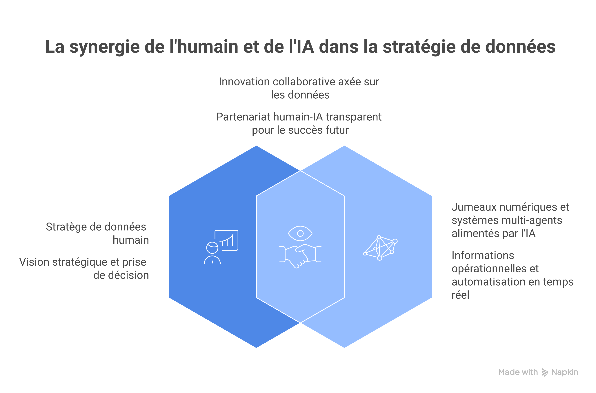
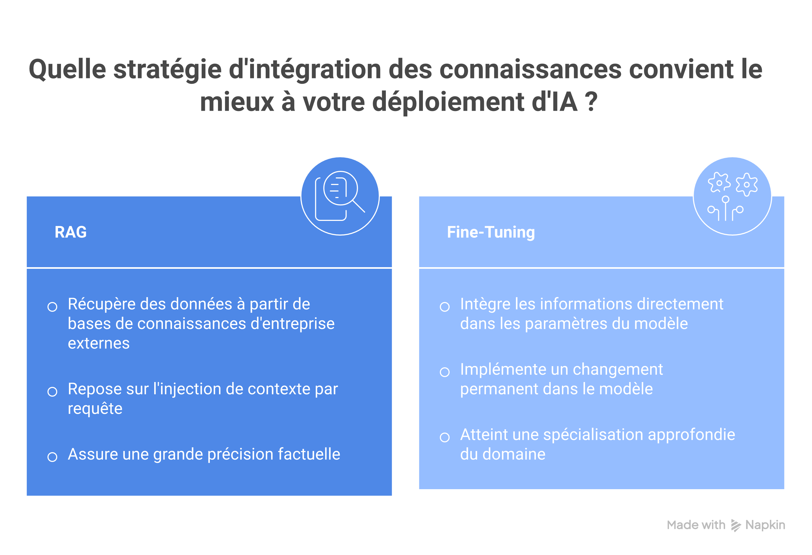

L'Urgence de la Formation B2B face à l'Horizon IA 2027
Nous ne sommes plus à l'ère de la découverte amusante de ChatGPT. En 2027, l'intelligence artificielle ne sera plus un avantage compétitif, mais une commodité opérationnelle indispensable. Ne pas former ses équipes aujourd'hui, c'est accepter une obsolescence programmée pour demain. Selon l'analyse interne de Babylone 42, la pénétration de l'IA dans les flux de travail B2B critiques augmentera de 40% d'ici 2026. La question n'est plus de savoir si l'IA va transformer votre métier, mais si vos équipes seront prêtes à la piloter.
Le véritable enjeu de 2027 n'est pas technologique, il est humain. Le "décalage de compétences" (skill gap) devient le principal frein à la croissance. Les entreprises qui réussiront seront celles qui auront transformé leurs collaborateurs de simples utilisateurs d'outils en architectes de workflows augmentés par des modèles de langage (LLM) d'entreprise et des systèmes d'IA. Cette transition nécessite une compréhension profonde des mécanismes, et non une simple maîtrise des prompts de base pour un workflow automatisé.

A detailed photorealistic visualization of a human data strategist collaborating seamlessly in a 2027 modern office environment. Multiple transparent displays around them show complex visual mappings of operational 'Digital Twins' and the orchestration of multi-agent systems, with visible agent nodes (e.g., researcher, analyst). The lighting is futuristic yet functional, highlighting the human-AI interaction.
Matrice des Compétences IA 2027 : Au-delà du Prompt Engineering
En 2027, savoir rédiger un bon prompt sera aussi basique que de savoir taper au clavier aujourd'hui. La matrice des compétences indispensables évolue vers une compréhension structurelle de l'IA.
1. La Maîtrise des Architectures Agentiques
Le futur n'est pas aux chatbots isolés, mais aux systèmes d'agents autonomes. Une compétence clé sera de savoir orchestrer plusieurs IA spécialisées (un agent chercheur, un agent rédacteur, un agent analyste de données) pour accomplir une tâche complexe. Gartner prévoit que les applications intelligentes et les agents autonomes seront des tendances majeures dans les années à venir.
2. L'Ingénierie de Contexte et RAG (Retrieval-Augmented Generation)
Les modèles génériques atteignent leurs limites. La compétence critique pour le B2B sera la capacité à connecter l'IA aux données propriétaires de l'entreprise de manière sécurisée. Comprendre le mécanisme du RAG — qui permet à un LLM de puiser dans une base de connaissances interne avant de générer une réponse — sera indispensable pour des fonctions comme le support client avancé ou l'analyse de contrats.
3. L'Éthique Appliquée et la Gouvernance (AI Act compliant)
Avec l'entrée en vigueur complète de l'EU AI Act, savoir auditer un modèle pour les biais, assurer la transparence des décisions prises par l'IA et garantir la conformité des données d'entraînement sera une compétence non-négociable pour les managers B2B. L'IA doit être performante, mais surtout de confiance.
Comprendre les Mécanismes pour Mieux Former : RAG vs Fine-Tuning
Pour concevoir un plan de formation B2B efficace, il est crucial de comprendre la différence technique entre les deux méthodes principales de personnalisation de l'IA, car elles ne s'adressent pas aux mêmes profils ni aux mêmes besoins métier.

Document Retrieval from External Corporate Knowledge Bases (represented by distinct icons like PDFs, CRM, Notion) -> Context Injection into Prompt -> LLM Generation. Highlights 'Dynamic', 'Factual Accuracy'. On the right: 'Fine-Tuning'. It shows a visual transformation of a standard LLM icon into a customized LLM icon, with visible changes in internal weight connections. Highlights 'Permanent Change', 'Specialization'. The style is clean, digital, with glowing accents.">A modern, high-tech comparison infographic. On the left: 'RAG (Retrieval-Augmented Generation)'. It shows a clean flow: User Query -> Document Retrieval from External Corporate Knowledge Bases (represented by distinct icons like PDFs, CRM, Notion) -> Context Injection into Prompt -> LLM Generation. Highlights 'Dynamic', 'Factual Accuracy'. On the right: 'Fine-Tuning'. It shows a visual transformation of a standard LLM icon into a customized LLM icon, with visible changes in internal weight connections. Highlights 'Permanent Change', 'Specialization'. The style is clean, digital, with glowing accents.
Le Fine-Tuning : Entraîner la Mémoire
Le Fine-Tuning consiste à prendre un modèle pré-entraîné (comme Llama 3 ou Mistral) et à poursuivre son entraînement sur un jeu de données très spécifique. Cela modifie les poids internes du modèle pour qu'il adopte un certain style, jargon ou comportement. C'est comme envoyer un expert faire un master spécialisé.
Cas d'usage : Apprendre à une IA à rédiger des rapports médicaux dans le style exact d'un hôpital spécifique ou à coder selon les normes strictes d'une entreprise.
Le RAG : Donner un Livre Ouvert via base vectorielle
Le RAG (Retrieval-Augmented Generation) ne modifie pas le modèle. Il lui donne accès à une base de connaissances externe (VOS documents PDF, votre CRM, votre Notion), transformée en une base de connaissances vectorielle, au moment de la question. Le système recherche les informations pertinentes, les injecte dans le prompt, et demande au LLM de répondre EN UTILISANT ces informations. C'est comme passer un examen à livre ouvert. Cette méthode est beaucoup moins coûteuse, plus flexible, et réduit drastiquement les hallucinations.
Cas d'usage : Un chatbot RH qui répond précisément aux questions sur la politique de télétravail mise à jour hier.
Comparaison Actionnable pour la Formation
| Caractéristique | RAG | Fine-Tuning |
|---|---|---|
| Compétence requise | Ingénierie de données, Vector DB, Prompt Engineering | Data Science avancée, Machine Learning Ops |
| Coût | Faible à Modéré | Élevé (calculateur) |
| Mise à jour des connaissances | Instantanée (il suffit de mettre à jour le document source) | Nécessite un ré-entraînement complet |
| Précision des faits | Très élevée (sources citées) | Moyenne (risque d'hallucinations persistantes) |
Guide Stratégique en 4 Étapes pour Votre Plan de Formation B2B
Face à cette complexité, comment structurer la montée en compétences de vos équipes d'ici 2027 ? Voici une approche pragmatique.
Étape 1 : L'Audit de Maturité et la Cartographie des Rôles
Ne formez pas tout le monde de la même manière. Identifiez trois niveaux :
- Utilisateurs Avertis : Doivent maîtriser les outils d'IA générative pour gagner 20% de temps sur l'administratif (rédaction, synthèse, traduction).
- Spécialistes Métier Augmentés : (ex: Commerciaux B2B) Doivent savoir utiliser l'IA pour le scoring prédictif ou l'hyper-personnalisation des solutions d'automation de prospection.
- Architectes/Builders IA : Profils techniques ou Ops qui construiront les workflows agentiques et géreront le RAG.
Étape 2 : L'Expérimentation Immédiate sur Cas d'Usage Réels
La théorie ne suffit pas. Vos formations doivent inclure des ateliers pratiques sur les données de l'entreprise (anonymisées). Par exemple, formez votre équipe marketing à créer un générateur de posts LinkedIn qui respecte strictement la charte éditoriale de l'entreprise grâce à un mini-système RAG.
Étape 3 : Intégrer l'IA dans la Culture d'Entreprise
Le principal frein à l'adoption n'est pas technique, il est culturel. Créez des communautés de pratique internes, partagez les meilleurs prompts (prompt library), et valorisez les gains de temps réalisés grâce à l'IA. La formation doit être continue, car la technologie évolue rapidement.
Étape 4 : Choisir les Bons Partenaires de Formation
Recherchez des formations qui allient expertise technique (comprendre ce qu'est une Vector DB) et vision stratégique B2B. Consultez notre calendrier de formations spécialisées en IA B2B pour découvrir des parcours adaptés à vos besoins opérationnels de 2027.
Conclusion : Investir dans l'Humain pour Maîtriser la Machine
L'IA en 2027 ne sera pas une baguette magique, mais une infrastructure puissante. La valeur d'une entreprise B2B ne résidera plus dans la possession de cette technologie, mais dans la capacité de ses collaborateurs à la piloter avec intelligence, éthique et créativité. La formation stratégique à l'IA est aujourd'hui l'investissement le plus rentable pour garantir la compétitivité de demain. Notre analyse interne de Babylone 42 montre un ROI moyen sous 6 mois pour les entreprises ayant mis en place une véritable stratégie de montée en compétences IA. N'attendez pas 2027 pour commencer.
Analogie: Le RAG est comme un examen à livre ouvert. L'IA (l'élève) ne se fie pas seulement à sa mémoire, mais peut aller chercher les informations exactes dans vos documents (le livre) avant de formuler sa réponse. Cela supprime les hallucinations factuelles et garantit la pertinence métier.
Contrairement à un chatbot passif, un agent IA peut recevoir un objectif flou (ex: 'Planifie cette conférence') et le décomposer en sous-tâches, utiliser des outils (recherche web, envoi d'emails, création de docs) et itérer de manière autonome jusqu'à atteindre le résultat.